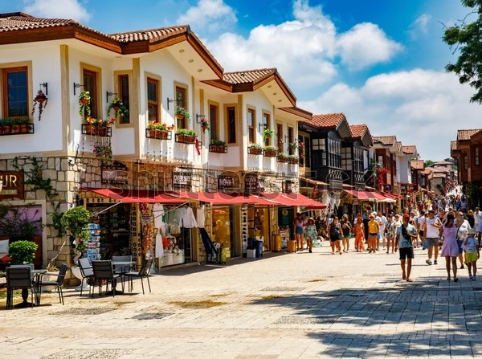

Novamall
120’den fazla mağazası, sinema salonu, çocuk oyun alanları ve 4.000 m²’lik yeme-içme katıyla hizmet veren büyük bir alışveriş merkezidir. Merkezi konumu ve geniş marka yelpazesiyle hem alışveriş hem de sosyal etkinlikler için ideal bir yaşam alanıdır.

Merkez Külliye Camii
Manavgat’ın en büyük ibadethanesi olan Merkez Külliye Camii, Osmanlı mimarisinden esinlenilerek yapılmıştır. Cami sadece ibadet için değil; medrese, aşevi, hamam ve hayır kurumlarını da içeren bir külliye olarak hizmet verir. Ayrıca farklı dillerde Kur’an mealleriyle yabancı ziyaretçilere de hitap eden cami, dikkat çeken dini ve kültürel merkezlerinden biridir.

Yapay Şelale
Türkbeleni Kent Parkı içerisinde yer alan şelale, yürüyüş yolları, oturma alanları ve yeşil peyzajıyla ziyaretçilere doğayla iç içe bir dinlenme ortamı sunmaktadır. Özellikle yaz aylarında serinlemek ve fotoğraf çekmek isteyenler için ideal bir mekândır.

Ters Villa
Türkiye'nin en büyük ters evi olarak ziyaretçilerine benzersiz bir deneyim sunmaktadır. Dışarıdan bakıldığında çatısı yere, temeli ise gökyüzüne bakan bu yapı, iç mekânda da tüm eşyaların tavana asılı olmasıyla dikkat çeker. Gerçek ve çalışır durumdaki eşyalarla donatılmış olan ev; ziyaretçilere algılarını zorlayan, eğlenceli ve fotoğraf çekimleri için ideal birbir ortam sunar.

Mesire Alanı
Sorgun Boğaz Mesire Alanı, çam ormanlarının arasında doğayla iç içe vakit geçirmek isteyenler için huzurlu bir kaçış noktasıdır. Gölgelik piknik alanları, yürüyüş yolları ve çocuklar için oyun alanları sayesinde özellikle yaz aylarında hem dinlenmek hem de doğa aktiviteleri yapmak isteyen ziyaretçilerin ilgisini çeker. Sessiz, serin ve doğal atmosferiyle aileler, doğa severler ve fotoğraf tutkunları için ideal bir alandır.

Side Antik Kenti
Side Antik Kenti, M.Ö. 7. yüzyıldan günümüze kadar uzanan tarihi kalıntılarıyla ünlüdür. Apollo Tapınağı, Antik Tiyatro, Agora ve Antik Liman gibi önemli yapılarla zenginleşen bu alan, hem tarihî hem de doğal güzellikleriyle büyüleyici bir ziyaret noktasıdır. Side, Akdeniz kıyısındaki şirin plajları ve sıcakkanlı atmosferiyle de dikkat çeker.

Boğaz Piknik Alanı
Manavgat Irmağı ve Akdeniz'in birleşim noktasında yer alan eşsiz bir doğa alanıdır. Bu bölge, hem ırmağın hem de denizin sunduğu doğal güzelliklerle, sakin ve huzurlu bir atmosfer yaratır. Çeşitli ağaçlar, çimenlik alanlar ve geniş sahiliyle piknik yapmak için ideal bir alan sunan Sorgun Boğaz, aynı zamanda yürüyüş, fotoğrafçılık ve doğa gözlemi yapmak isteyenler için de harika bir yerdir.

Side Sualtı Müzesi
Akdeniz'in berrak sularında tüplü dalış yapmak isteyenler için ideal bir destinasyondur. Avrupa'nın en büyük su altı müzesi olan Side Sualtı Müzesi, antik heykeller ve batıklarla dolu zengin bir su altı dünyası sunar. Dalış turları, deneyimli eğitmenler eşliğinde güvenli bir şekilde gerçekleştirilir ve katılımcılara tüm gerekli ekipmanlar sağlanır.

Discovery Park
Discovery Park Manavgat, dinopark, hayvanat bahçesi, akvaryum gibi farklı bölümleriyle ziyaretçilerine unutulmaz deneyimler sunar. Dinopark'ta dinozor figürleriyle tarih yolculuğu yapabilir, hayvanat bahçesinde egzotik hayvanları gözlemleyebilir ve akvaryumda deniz canlıları hakkında bilgi edinebilirsiniz.

Merkez Cadde
İlçenin en canlı noktalarından biri olup, alışveriş, yeme içme ve sosyal yaşamın merkezidir. Yerel dükkânlar, mağazalar ve kafelerle dolu bu cadde, hem halkın hem de turistlerin uğrak noktasıdır. Geçmişte semt pazarı ve küçük esnafların yoğun olduğu bir bölge olan cadde, günümüzde modern bir şehir caddesine dönüşmüştür. Manavgat’ın ruhubu yakalamak isteyen herkes için önemli bir duraktır.

Macera Parkı
Yaklaşık 40 dönümlük alanda kurulu olan park, çam ağaçları arasında çeşitli parkurlarda halatlarla geçiş, ip köprüler, tahta köprüler ve zipline gibi aktiviteler sunmaktadır. Bu etkinlikler, katılımcıların denge ve cesaret becerilerini test etmelerine olanak tanır. Parkurun tamamlanması yaklaşık 2,5 saat sürmektedir. Doğa ile iç içe bir gün geçirmek isteyenler için ideal bir destinasyondur.

Manavgat Irmağı
Irmağın kenarı, şehir boyunca parklar, kafeler ve restaurantlar ile çevrilidir. Gerek yürüyüş yapmak isteyen gerekse ırmak manzarası eşliğinde dinlenmek isteyenler için güzel bir uğrak noktasıdır. Ayrıca fotoğraf çekinmek isteyenler için de önemli bir destinasyondur.